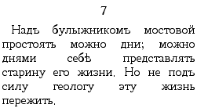
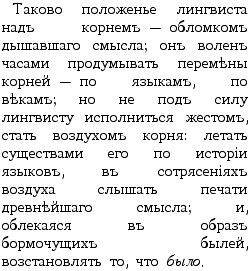
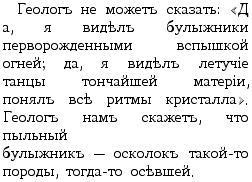
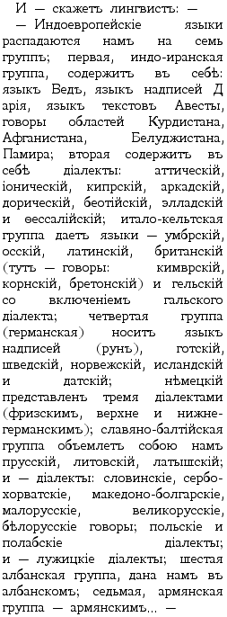
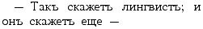
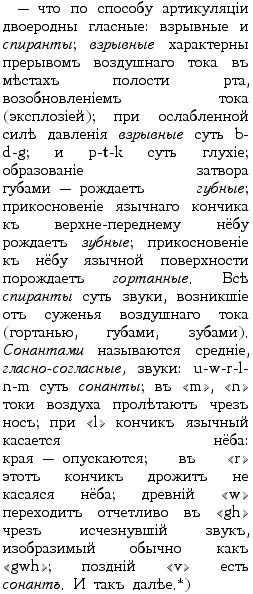
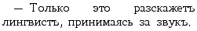
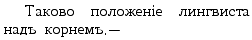
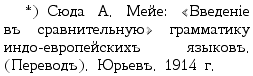

Glossolalia (Section 7)

You can stand for days; for days on the cobblestones of the roadway; you can for days imagine to yourself the ancient time of its life. But the geologist has not the power to relive this life.

The position of the linguist on a root -- the fragment of breathed meaning -- is similar; he is free to meditate for hours on the alternations of roots -- across languages, throughout the centuries; but the linguist has not the power to be fulfilled via the gesture, to become the air of the root: to fly as its beings through the history of languages, to hear in the shudderings of the air the imprint of ancient meaning; and, by wrapping oneself in the image of muttering bygones, to resurrect that which has gone by.

A geologist cannot say: "Yes, I've viewed the cobblestones in their original incarnation by a flash of fires; yes, I've viewed the flying dances of delicate matter, I've comprehended all the rhythms of crystal." The geologist will tell us, that the dusty cobblestone is -- a fragment of some sort of rock, which settled down once upon a time.

And -- a linguist will say: --
-- Indo-European languages break down for us into seven groups; the first, the Indo-Iranian group, contains: the language of the Vedas, the language of the inscriptions of Darius, the language of the Avesta texts, the dialects of the regions of Kurdistan, Afghanistan, Beludzhistan[Baluchistan], Pamir; the second contains the dialects: Attic, Ionic, Cypriot, Arcadic, Doric, Boeotian, (H)elladic [Hellenic] and Thessalonic; the Italo-Celtic group gives the languages -- Umbrian, Oscan, Latin, British (here are -- the dialects: Cumbric, Cornish, Breton) and Welsh with the inclusion of the Gaelic dialect; the fourth group (the Germanic) bears the language of the inscriptions (runics), Gothic, Swedish, Norwegian, Icelandic and Danish; German is represented by three dialects (Frisian, High and Lower German); the Slavic-Baltic group embraces for us Prussian, Lithuanian, Latvian; and -- the dialects Slovenian, Serbo-Croatian, Macedonian-Bulgarian, Little Russian [Ukrainian], Great Russian, Belorussian dialects; the Polish and Polabian dialects; and -- the Lusatian dialects; the sixth Albanian group, is given to us in Albanian; the seventh, the Armenian group -- in Armenian...--

-- That's what the linguist will say; and he will also say --

-- that based on the means of articulation there are two generic types of consonants: the plosives and the spirants; the plosives are characterized by an interruption of the air flow in places of the orifice of the mouth, by the restoration of the flow (by an explosion); the plosives with a reduced force of pressure are b-d-g; and p-t-k are voiceless; the formation of a closure by the lips -- gives birth to the labials; touching the tip of the tongue to the upper-frontal palate gives birth to the dentals; touching the surface of the tongue to the palate will generate the gutturals. All spirants are sounds, which have arisen from a constriction of the air flow (by the larynx, the lips, the teeth). Medial, vowel-consonant sounds are called sonants: u-w-r-l-n-m are sonants; for "m" and "n" the flows of air fly through the nose; for "l" the tongue's tip touches the palate; the edges are -- lowered; for "r" this tip trembles without touching the palate; the ancient "w" turns into distinctly into "gh" via the disappeared sound, usually depicted as "gwh"; the latter "v" is a sonant. Et cetera.*

-- This is the only thing the linguist, who has taken up sound, will say.

That is the position of the linguist on a root.--

* See A. Meillet Introduction to Comparative Grammar of Indo-European Languages (translation) Yuriev, 1914).